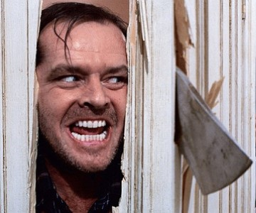
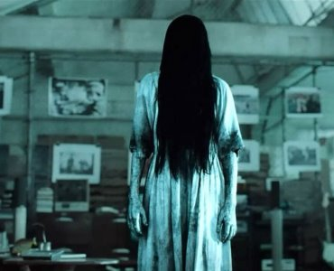
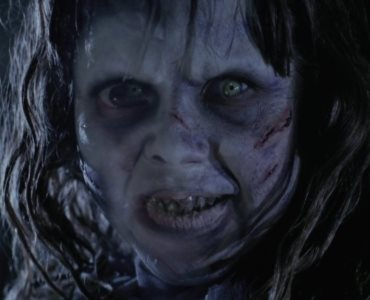
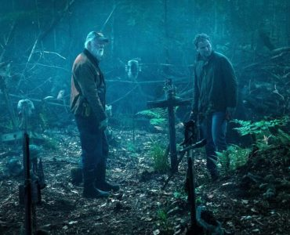

«Игра престолов»
Американский телесериал в жанре фэнтези, основанный на цикле романов «Песнь Льда и Огня» Джорджа Р. Р. Мартина. Снят под руководством Дэвида Бениоффа и Д. Б. Уайсса
Смотреть сериал онлайн

«Сияние»
Фильм ужасов режиссёра, сценариста и продюсера Стэнли Кубрика, снятый в 1980 году
Смотреть фильм онлайн

«Звонок»
Американский фильм ужасов, ремейк японского фильма ужасов «Звонок», снятый режиссёром Гором Вербински.(2002 год)
Смотреть фильм онлайн

«Изгоняющий дьявола»
Классический фильм ужасов 1973 года, снятый режиссёром Уильямом Фридкином.
Смотреть фильм онлайн

«Кладбище домашних животных»
Фильм ужасов режиссёров Кевина Колша и Денниса Уидмайера, снятый в 2019 году
Смотреть фильм онлайн